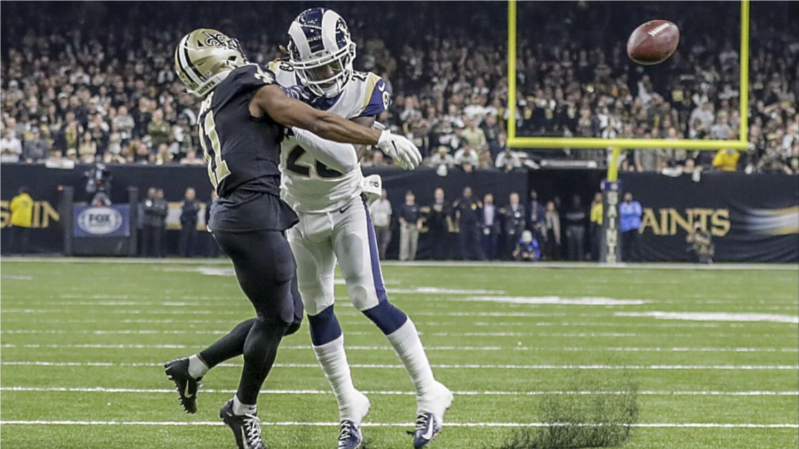

How Much Do Referees Decide NFL Games? A Data-Driven Look at Late-Game Calls and a Possible Solution
Close games in the NFL are often decided by small margins, often at the expense of officiating errors. Because of this, referees are put under scrutiny when the outcome of a game is left to their decision. While…